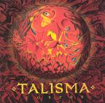

| Artist: | Talisma |
| Title: | Corpus |
| Label: | Unicorn Records UNCR-5009 |
| Length(s): | minutes |
| Year(s) of release: | 2003 |
| Month of review: | [01/2004] |
| 1) | Crisis | 3.38 |
| 2) | L'Empalé | 3.34 |
| 3) | Corpus | 2.35 |
| 4) | Satanusky | 3.46 |
| 5) | Le Druide | 1.08 |
| 6) | Samba Tapping | 2.31 |
| 7) | Gavotte En Rondeau 1.06 | |
| 8) | Step Flange | 4.05 |
| 9) | Freezone | 3.10 |
| 10) | Interlude | 1.33 |
| 11) | Corpus II | 3.18 |
| 12) | Untitled 5/8 | 3.12 |
| 13) | D Double U | 4.07 |
| 14) | Mr. Twitts | 3.29 |
| 15) | Mandoly | 1.39 |
Corpus is a waltzy piece, very tuneful in fact with distinctive jolly keys and strumming acoustic guitar. There are times when I listen to this and recall elements of Heon or Spaced Out, but on the whole Talisma is the most progressive in the narrow sense, i.e., following the examples of the past, while Spaced Out for instance is more of a jazzrock outfit, albeit in some sense very much unlike others.
Satanusky is the first track where the melodic material is a bit less developed. Busy drumming, plodding and varied, and plenty of bass thumping, but on the whole a bit too little melody for my tastes. Le Druide is only a short interlude, to compensate maybe the lack of melody of the foregoing. This is in fact all melody, quite subtle in fact. A bit soundtrackish with a subtle Greek influence. Very nice. Samba Tapping has a kind of wordless vocal chanting in the back. One might be reminded of later Zuehl offerings which tends to have this type of vocals. I am generally not so fond of them. The pace is high on this one, and quite friendly generally. Gavotte En Rondeau features acoustic guitar mainly. An exercise on that instrument for the most part. The rock sets in, not so heavily this time, on Step Flange. The wordless vocals return here, yielding a vagueish result. Typical modern instrumental progressive I would say, meandering about somewhat. Later the song obtains some more power with some very potent guitar lines (not heavy, but potent).
Jazz and scat can be found on Freezone. This is something which I absolutely do not like myself. Quick to the Interlude, which soon gives way to the distinctive Corpus II. Funny track this with lazy basslines and interesting melodies. Again something Hackett might have made in his earlier days.
Untitled 5/8 is typically of the Discipline style of guitar playing initiated by Robert Fripp. It even also has some of the soundscapes of Mr. Fripp. It does sound a bit lazier than eighties Crimson for instance.
In D Double U, the Gordian Knot feel returns, fast repetitive patterns are played out against a much slower punctuating melody. The guitar then becomes more rowdy making the result sound more urgent. I like that. Mr. Twitts is a percussive piece of work, showing off the guitar playing prowess of the lead guitarist. Mandoly is the peaceful closer with clear sounds, I would think mandolin in view of the title.